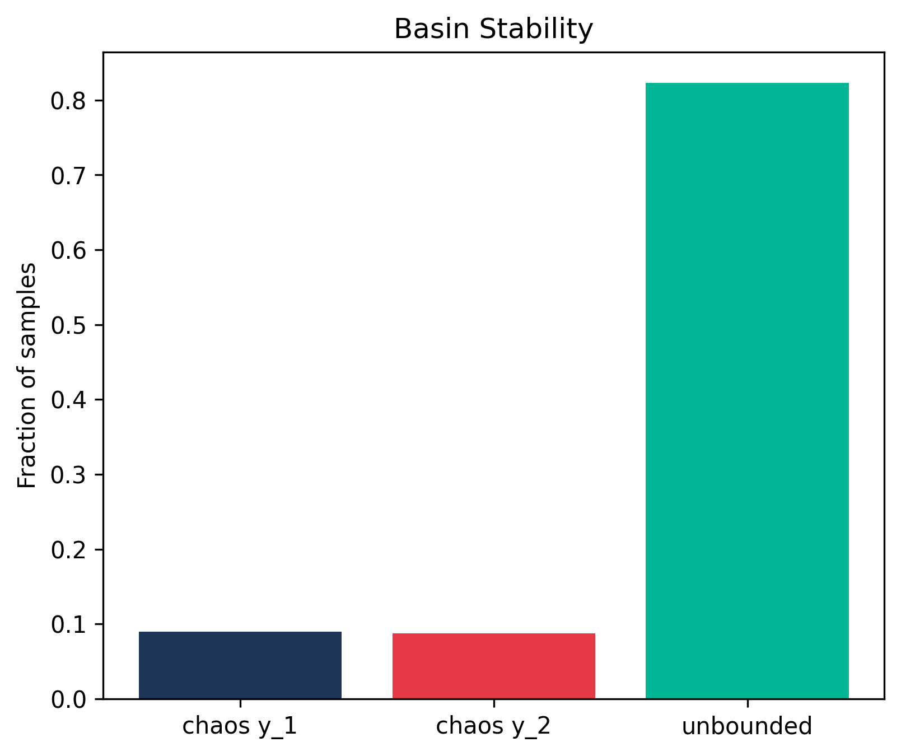
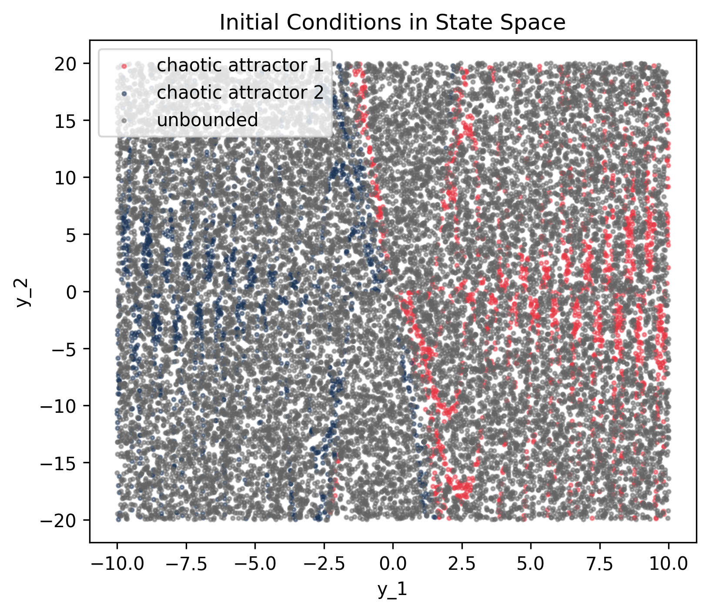
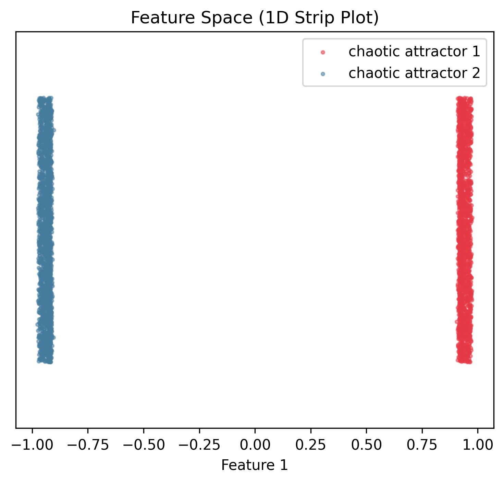
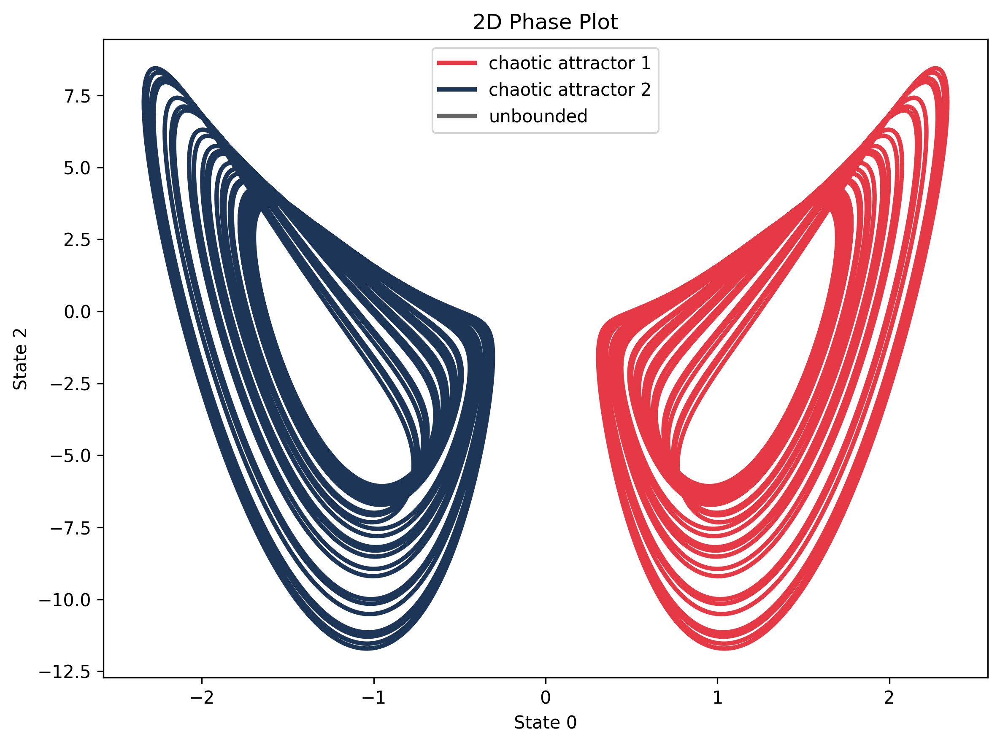
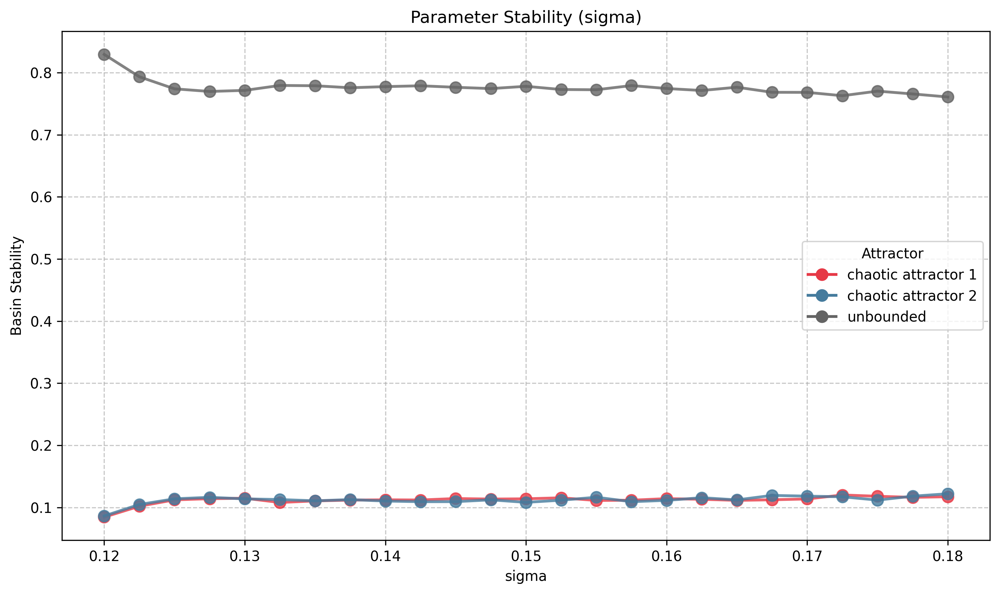
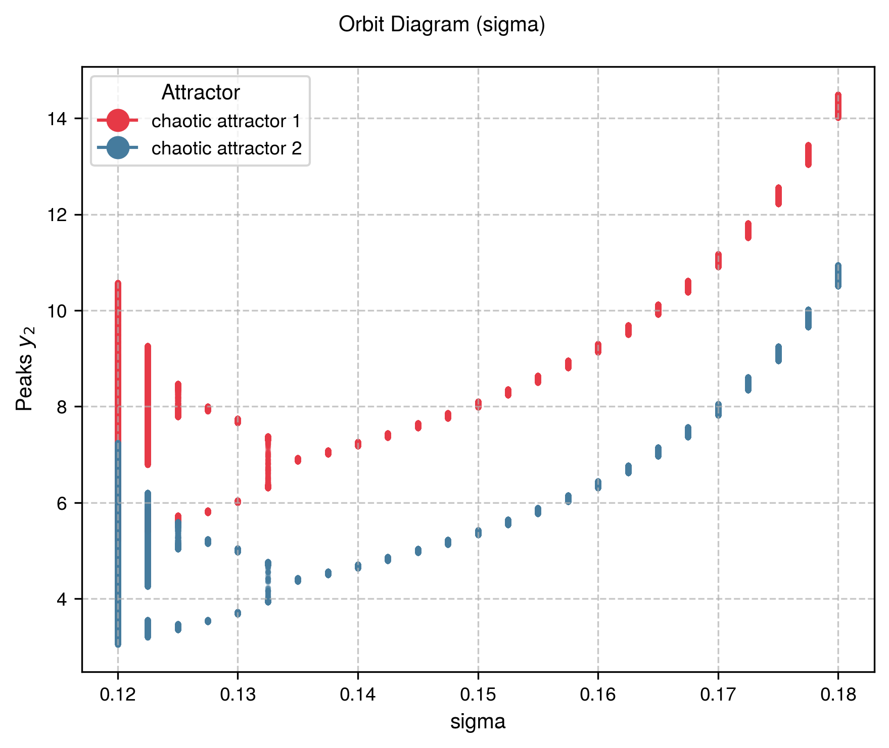
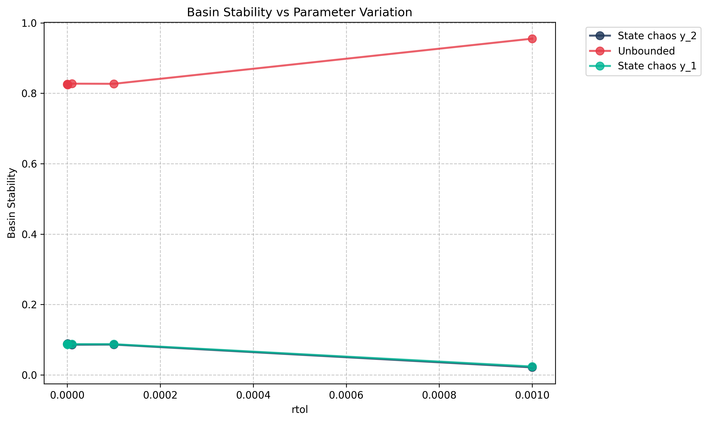
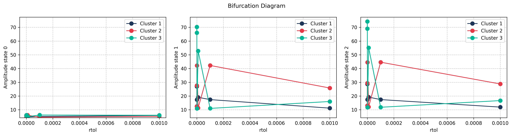
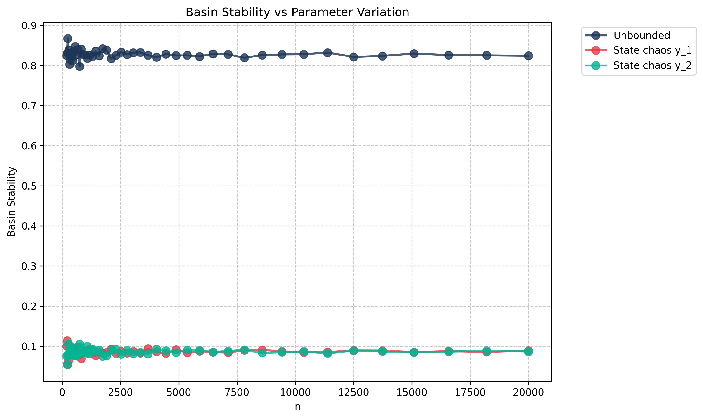
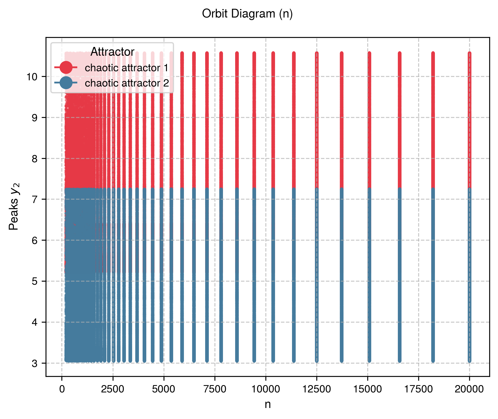

Lorenz System
System Description
Lorenz system:
System Parameters
| Parameter | Symbol | Value |
|---|---|---|
| Prandtl number | \(\sigma\) | 0.12 |
| Rayleigh number | \(r\) | 0.0 |
| Geometric factor | \(b\) | -0.6 |
Sampling
- Dimension: \(D = 3\)
- Sample size: \(N = 20000\)
- Distribution: \(\rho\) = Uniform
- Region of interest: \(\mathcal{Q}(x, y, z) : [-10, 10] \times [-20, 20] \times [0]\)
Solver
| Setting | Value |
|---|---|
| Method | Dopri5 (Diffrax) |
| Time span | \([0, 1000]\) |
| Steps | 4000 (\(f_s\) = 4 Hz) |
| Relative tolerance | 1e-08 |
| Absolute tolerance | 1e-06 |
| Event function | Divergence at \(\vert y \vert > 200\) |
Feature Extraction
Mean of \(x\) coordinate after transient:
- States: \(x\) (state 0)
- Formula: \(\bar{x} = \text{mean}(x_{t > t^*})\)
- Transient cutoff: \(t^* = 900.0\)
Clustering
- Method: k-NN (k=1)
- Template ICs:
- chaotic attractor 1: \([0.8, -3.0, 0.0]\) — Positive wing chaotic attractor
- chaotic attractor 2: \([-0.8, 3.0, 0.0]\) — Negative wing chaotic attractor
- unbounded: \([10.0, 50.0, 0.0]\) — Diverging trajectories
Key Feature
Demonstrates unboundedness detection with event_fn.
Reproduction Code
Setup
def setup_lorenz_system() -> SetupProperties:
n = 20_000
device = "cuda" if torch.cuda.is_available() else "cpu"
print(f"Setting up Lorenz system on device: {device}")
params: LorenzParams = {"sigma": 0.12, "r": 0.0, "b": -0.6}
ode_system = LorenzJaxODE(params)
sampler = UniformRandomSampler(
min_limits=[-10.0, -20.0, 0.0], max_limits=[10.0, 20.0, 0.0], device=device
)
solver = JaxSolver(
time_span=(0, 1000),
n_steps=4000,
device=device,
rtol=1e-8,
atol=1e-6,
cache_dir=".pybasin_cache/lorenz",
event_fn=lorenz_stop_event,
)
feature_extractor = JaxFeatureExtractor(
time_steady=900.0,
normalize=False,
features_per_state={
0: {"mean": None},
1: None,
2: None,
},
)
classifier_initial_conditions = [
[0.8, -3.0, 0.0],
[-0.8, 3.0, 0.0],
[10.0, 50.0, 0.0],
]
classifier_labels = ["chaotic attractor 1", "chaotic attractor 2", "unbounded"]
knn = KNeighborsClassifier(n_neighbors=1)
template_integrator = TemplateIntegrator(
template_y0=classifier_initial_conditions,
labels=classifier_labels,
ode_params=params,
)
return {
"n": n,
"ode_system": ode_system,
"sampler": sampler,
"solver": solver,
"feature_extractor": feature_extractor,
"estimator": knn,
"template_integrator": template_integrator,
}
Main Estimation
def main():
props = setup_lorenz_system()
bse = BasinStabilityEstimator(
n=props["n"],
ode_system=props["ode_system"],
sampler=props["sampler"],
solver=props.get("solver"),
feature_extractor=props.get("feature_extractor"),
predictor=props.get("estimator"),
template_integrator=props.get("template_integrator"),
save_to="results_case1",
# feature_selector=None,
)
basin_stability = bse.estimate_bs()
print("Basin Stability:", basin_stability)
# bse.save()
return bse
Case 1: Baseline Results
Comparison with MATLAB bSTAB
Overall Classification Quality:
- Macro F1-score: 0.9991
- Matthews Correlation Coefficient: 0.9985
| Attractor | pyBasin BS ± SE | bSTAB BS ± SE | F1 |
|---|---|---|---|
| chaotic attractor 1 | 0.0894 ± 0.0020 | 0.0894 ± 0.0020 | 0.9989 |
| chaotic attractor 2 | 0.0875 ± 0.0020 | 0.0874 ± 0.0020 | 0.9986 |
| unbounded | 0.8231 ± 0.0027 | 0.8232 ± 0.0027 | 0.9997 |
Visualizations
Basin Stability

State Space

Feature Space

Template Phase Space

Case 2: Sigma Parameter Sweep
Comparison with MATLAB bSTAB
Average MCC = 0.9999
| Parameter | Attractor | pyBasin BS ± SE | bSTAB BS ± SE | MCC |
|---|---|---|---|---|
| 0.12 | chaotic attractor 1 | 0.0844 ± 0.0020 | 0.0843 ± 0.0020 | 0.9982 |
| chaotic attractor 2 | 0.0862 ± 0.0020 | 0.0859 ± 0.0020 | ||
| unbounded | 0.8294 ± 0.0027 | 0.8298 ± 0.0027 | ||
| 0.1225 | chaotic attractor 1 | 0.1019 ± 0.0021 | 0.1019 ± 0.0021 | 1.0000 |
| chaotic attractor 2 | 0.1047 ± 0.0022 | 0.1047 ± 0.0022 | ||
| unbounded | 0.7933 ± 0.0029 | 0.7933 ± 0.0029 | ||
| 0.125 | chaotic attractor 1 | 0.1122 ± 0.0022 | 0.1122 ± 0.0022 | 1.0000 |
| chaotic attractor 2 | 0.1139 ± 0.0022 | 0.1139 ± 0.0022 | ||
| unbounded | 0.7740 ± 0.0030 | 0.7740 ± 0.0030 | ||
| 0.1275 | chaotic attractor 1 | 0.1140 ± 0.0022 | 0.1140 ± 0.0022 | 1.0000 |
| chaotic attractor 2 | 0.1163 ± 0.0023 | 0.1163 ± 0.0023 | ||
| unbounded | 0.7697 ± 0.0030 | 0.7697 ± 0.0030 | ||
| 0.13 | chaotic attractor 1 | 0.1148 ± 0.0023 | 0.1148 ± 0.0023 | 1.0000 |
| chaotic attractor 2 | 0.1138 ± 0.0022 | 0.1138 ± 0.0022 | ||
| unbounded | 0.7714 ± 0.0030 | 0.7714 ± 0.0030 | ||
| 0.1325 | chaotic attractor 1 | 0.1080 ± 0.0022 | 0.1080 ± 0.0022 | 1.0000 |
| chaotic attractor 2 | 0.1127 ± 0.0022 | 0.1127 ± 0.0022 | ||
| unbounded | 0.7794 ± 0.0029 | 0.7794 ± 0.0029 | ||
| 0.135 | chaotic attractor 1 | 0.1105 ± 0.0022 | 0.1105 ± 0.0022 | 1.0000 |
| chaotic attractor 2 | 0.1106 ± 0.0022 | 0.1106 ± 0.0022 | ||
| unbounded | 0.7789 ± 0.0029 | 0.7789 ± 0.0029 | ||
| 0.1375 | chaotic attractor 1 | 0.1118 ± 0.0022 | 0.1118 ± 0.0022 | 1.0000 |
| chaotic attractor 2 | 0.1126 ± 0.0022 | 0.1126 ± 0.0022 | ||
| unbounded | 0.7756 ± 0.0029 | 0.7756 ± 0.0029 | ||
| 0.14 | chaotic attractor 1 | 0.1123 ± 0.0022 | 0.1123 ± 0.0022 | 1.0000 |
| chaotic attractor 2 | 0.1103 ± 0.0022 | 0.1103 ± 0.0022 | ||
| unbounded | 0.7775 ± 0.0029 | 0.7775 ± 0.0029 | ||
| 0.1425 | chaotic attractor 1 | 0.1119 ± 0.0022 | 0.1119 ± 0.0022 | 0.9999 |
| chaotic attractor 2 | 0.1092 ± 0.0022 | 0.1092 ± 0.0022 | ||
| unbounded | 0.7789 ± 0.0029 | 0.7789 ± 0.0029 | ||
| 0.145 | chaotic attractor 1 | 0.1143 ± 0.0022 | 0.1143 ± 0.0022 | 1.0000 |
| chaotic attractor 2 | 0.1093 ± 0.0022 | 0.1093 ± 0.0022 | ||
| unbounded | 0.7764 ± 0.0029 | 0.7764 ± 0.0029 | ||
| 0.1475 | chaotic attractor 1 | 0.1134 ± 0.0022 | 0.1134 ± 0.0022 | 1.0000 |
| chaotic attractor 2 | 0.1122 ± 0.0022 | 0.1122 ± 0.0022 | ||
| unbounded | 0.7743 ± 0.0030 | 0.7743 ± 0.0030 | ||
| 0.15 | chaotic attractor 1 | 0.1139 ± 0.0022 | 0.1139 ± 0.0022 | 1.0000 |
| chaotic attractor 2 | 0.1081 ± 0.0022 | 0.1081 ± 0.0022 | ||
| unbounded | 0.7780 ± 0.0029 | 0.7780 ± 0.0029 | ||
| 0.1525 | chaotic attractor 1 | 0.1155 ± 0.0023 | 0.1155 ± 0.0023 | 1.0000 |
| chaotic attractor 2 | 0.1116 ± 0.0022 | 0.1116 ± 0.0022 | ||
| unbounded | 0.7729 ± 0.0030 | 0.7729 ± 0.0030 | ||
| 0.155 | chaotic attractor 1 | 0.1112 ± 0.0022 | 0.1112 ± 0.0022 | 1.0000 |
| chaotic attractor 2 | 0.1163 ± 0.0023 | 0.1163 ± 0.0023 | ||
| unbounded | 0.7724 ± 0.0030 | 0.7724 ± 0.0030 | ||
| 0.1575 | chaotic attractor 1 | 0.1116 ± 0.0022 | 0.1116 ± 0.0022 | 1.0000 |
| chaotic attractor 2 | 0.1092 ± 0.0022 | 0.1092 ± 0.0022 | ||
| unbounded | 0.7792 ± 0.0029 | 0.7792 ± 0.0029 | ||
| 0.16 | chaotic attractor 1 | 0.1142 ± 0.0022 | 0.1142 ± 0.0022 | 1.0000 |
| chaotic attractor 2 | 0.1114 ± 0.0022 | 0.1114 ± 0.0022 | ||
| unbounded | 0.7744 ± 0.0030 | 0.7744 ± 0.0030 | ||
| 0.1625 | chaotic attractor 1 | 0.1131 ± 0.0022 | 0.1131 ± 0.0022 | 1.0000 |
| chaotic attractor 2 | 0.1157 ± 0.0023 | 0.1157 ± 0.0023 | ||
| unbounded | 0.7712 ± 0.0030 | 0.7712 ± 0.0030 | ||
| 0.165 | chaotic attractor 1 | 0.1114 ± 0.0022 | 0.1114 ± 0.0022 | 1.0000 |
| chaotic attractor 2 | 0.1121 ± 0.0022 | 0.1121 ± 0.0022 | ||
| unbounded | 0.7765 ± 0.0029 | 0.7765 ± 0.0029 | ||
| 0.1675 | chaotic attractor 1 | 0.1123 ± 0.0022 | 0.1123 ± 0.0022 | 0.9999 |
| chaotic attractor 2 | 0.1193 ± 0.0023 | 0.1194 ± 0.0023 | ||
| unbounded | 0.7683 ± 0.0030 | 0.7683 ± 0.0030 | ||
| 0.17 | chaotic attractor 1 | 0.1136 ± 0.0022 | 0.1136 ± 0.0022 | 1.0000 |
| chaotic attractor 2 | 0.1182 ± 0.0023 | 0.1182 ± 0.0023 | ||
| unbounded | 0.7682 ± 0.0030 | 0.7682 ± 0.0030 | ||
| 0.1725 | chaotic attractor 1 | 0.1201 ± 0.0023 | 0.1201 ± 0.0023 | 1.0000 |
| chaotic attractor 2 | 0.1171 ± 0.0023 | 0.1171 ± 0.0023 | ||
| unbounded | 0.7629 ± 0.0030 | 0.7629 ± 0.0030 | ||
| 0.175 | chaotic attractor 1 | 0.1179 ± 0.0023 | 0.1179 ± 0.0023 | 1.0000 |
| chaotic attractor 2 | 0.1118 ± 0.0022 | 0.1118 ± 0.0022 | ||
| unbounded | 0.7702 ± 0.0030 | 0.7702 ± 0.0030 | ||
| 0.1775 | chaotic attractor 1 | 0.1162 ± 0.0023 | 0.1162 ± 0.0023 | 1.0000 |
| chaotic attractor 2 | 0.1181 ± 0.0023 | 0.1181 ± 0.0023 | ||
| unbounded | 0.7657 ± 0.0030 | 0.7657 ± 0.0030 | ||
| 0.18 | chaotic attractor 1 | 0.1172 ± 0.0023 | 0.1172 ± 0.0023 | 1.0000 |
| chaotic attractor 2 | 0.1220 ± 0.0023 | 0.1220 ± 0.0023 | ||
| unbounded | 0.7609 ± 0.0030 | 0.7609 ± 0.0030 |
Visualizations
Basin Stability Variation

Bifurcation Diagram

Case 3: Solver rtol Convergence Study
This hyperparameter study demonstrates the effect of ODE solver relative tolerance on basin stability estimation. Coarse tolerances (rtol=1e-3) produce inaccurate results, while finer tolerances converge to consistent values.
Comparison with MATLAB bSTAB
Average MCC = 0.9024
| Parameter | Attractor | pyBasin BS ± SE | bSTAB BS ± SE | MCC |
|---|---|---|---|---|
| 1.0e-03 | chaotic attractor 1 | 0.0236 ± 0.0011 | 0.0895 ± 0.0020 | 0.4478 |
| chaotic attractor 2 | 0.0211 ± 0.0010 | 0.0858 ± 0.0020 | ||
| unbounded | 0.9553 ± 0.0015 | 0.8246 ± 0.0027 | ||
| 1.0e-04 | chaotic attractor 1 | 0.0871 ± 0.0020 | 0.0874 ± 0.0020 | 0.9771 |
| chaotic attractor 2 | 0.0859 ± 0.0020 | 0.0862 ± 0.0020 | ||
| unbounded | 0.8270 ± 0.0027 | 0.8264 ± 0.0027 | ||
| 1.0e-05 | chaotic attractor 1 | 0.0871 ± 0.0020 | 0.0871 ± 0.0020 | 0.9952 |
| chaotic attractor 2 | 0.0855 ± 0.0020 | 0.0850 ± 0.0020 | ||
| unbounded | 0.8274 ± 0.0027 | 0.8279 ± 0.0027 | ||
| 1.0e-06 | chaotic attractor 1 | 0.0871 ± 0.0020 | 0.0872 ± 0.0020 | 0.9984 |
| chaotic attractor 2 | 0.0887 ± 0.0020 | 0.0887 ± 0.0020 | ||
| unbounded | 0.8242 ± 0.0027 | 0.8242 ± 0.0027 | ||
| 1.0e-07 | chaotic attractor 1 | 0.0860 ± 0.0020 | 0.0862 ± 0.0020 | 0.9979 |
| chaotic attractor 2 | 0.0882 ± 0.0020 | 0.0882 ± 0.0020 | ||
| unbounded | 0.8258 ± 0.0027 | 0.8256 ± 0.0027 | ||
| 1.0e-08 | chaotic attractor 1 | 0.0876 ± 0.0020 | 0.0874 ± 0.0020 | 0.9984 |
| chaotic attractor 2 | 0.0872 ± 0.0020 | 0.0871 ± 0.0020 | ||
| unbounded | 0.8252 ± 0.0027 | 0.8255 ± 0.0027 |
Visualizations
Basin Stability Variation

Bifurcation Diagram

Case 4: Sample Size Convergence Study
This hyperparameter study varies the number of initial conditions \(N\) from 200 to 20,000 (using \(2 \times \text{logspace}(2, 4, 50)\)) to assess how basin stability estimates converge as sample size increases. The relative standard error decreases as \(\text{SE}/\mathcal{S}_{\mathcal{B}} \sim 1/\sqrt{N}\).
Comparison with MATLAB bSTAB
Average MCC = 0.9981
| Parameter | Attractor | pyBasin BS ± SE | bSTAB BS ± SE | MCC |
|---|---|---|---|---|
| 200 | chaotic attractor 1 | 0.1000 ± 0.0212 | 0.1000 ± 0.0212 | 1.0000 |
| chaotic attractor 2 | 0.0750 ± 0.0186 | 0.0750 ± 0.0186 | ||
| unbounded | 0.8250 ± 0.0269 | 0.8250 ± 0.0269 | ||
| 219.7082 | chaotic attractor 1 | 0.1136 ± 0.0214 | 0.1091 ± 0.0210 | 0.9844 |
| chaotic attractor 2 | 0.0545 ± 0.0153 | 0.0545 ± 0.0153 | ||
| unbounded | 0.8318 ± 0.0252 | 0.8364 ± 0.0249 | ||
| 241.3585 | chaotic attractor 1 | 0.0537 ± 0.0145 | 0.0537 ± 0.0145 | 1.0000 |
| chaotic attractor 2 | 0.0785 ± 0.0173 | 0.0785 ± 0.0173 | ||
| unbounded | 0.8678 ± 0.0218 | 0.8678 ± 0.0218 | ||
| 265.1423 | chaotic attractor 1 | 0.0639 ± 0.0150 | 0.0639 ± 0.0150 | 1.0000 |
| chaotic attractor 2 | 0.1053 ± 0.0188 | 0.1053 ± 0.0188 | ||
| unbounded | 0.8308 ± 0.0230 | 0.8308 ± 0.0230 | ||
| 291.2697 | chaotic attractor 1 | 0.0788 ± 0.0158 | 0.0788 ± 0.0158 | 1.0000 |
| chaotic attractor 2 | 0.0822 ± 0.0161 | 0.0822 ± 0.0161 | ||
| unbounded | 0.8390 ± 0.0215 | 0.8390 ± 0.0215 | ||
| 319.9717 | chaotic attractor 1 | 0.1000 ± 0.0168 | 0.1000 ± 0.0168 | 1.0000 |
| chaotic attractor 2 | 0.0969 ± 0.0165 | 0.0969 ± 0.0165 | ||
| unbounded | 0.8031 ± 0.0222 | 0.8031 ± 0.0222 | ||
| 351.5021 | chaotic attractor 1 | 0.0938 ± 0.0155 | 0.0938 ± 0.0155 | 1.0000 |
| chaotic attractor 2 | 0.0909 ± 0.0153 | 0.0909 ± 0.0153 | ||
| unbounded | 0.8153 ± 0.0207 | 0.8153 ± 0.0207 | ||
| 386.1395 | chaotic attractor 1 | 0.0879 ± 0.0144 | 0.0879 ± 0.0144 | 1.0000 |
| chaotic attractor 2 | 0.0801 ± 0.0138 | 0.0801 ± 0.0138 | ||
| unbounded | 0.8320 ± 0.0190 | 0.8320 ± 0.0190 | ||
| 424.1902 | chaotic attractor 1 | 0.0918 ± 0.0140 | 0.0918 ± 0.0140 | 1.0000 |
| chaotic attractor 2 | 0.0871 ± 0.0137 | 0.0871 ± 0.0137 | ||
| unbounded | 0.8212 ± 0.0186 | 0.8212 ± 0.0186 | ||
| 465.9904 | chaotic attractor 1 | 0.0901 ± 0.0133 | 0.0901 ± 0.0133 | 1.0000 |
| chaotic attractor 2 | 0.0966 ± 0.0137 | 0.0966 ± 0.0137 | ||
| unbounded | 0.8133 ± 0.0181 | 0.8133 ± 0.0181 | ||
| 511.9096 | chaotic attractor 1 | 0.0859 ± 0.0124 | 0.0859 ± 0.0124 | 1.0000 |
| chaotic attractor 2 | 0.0781 ± 0.0119 | 0.0781 ± 0.0119 | ||
| unbounded | 0.8359 ± 0.0164 | 0.8359 ± 0.0164 | ||
| 562.3537 | chaotic attractor 1 | 0.0764 ± 0.0112 | 0.0764 ± 0.0112 | 1.0000 |
| chaotic attractor 2 | 0.0764 ± 0.0112 | 0.0764 ± 0.0112 | ||
| unbounded | 0.8472 ± 0.0152 | 0.8472 ± 0.0152 | ||
| 617.7687 | chaotic attractor 1 | 0.0971 ± 0.0119 | 0.0971 ± 0.0119 | 1.0000 |
| chaotic attractor 2 | 0.0761 ± 0.0107 | 0.0761 ± 0.0107 | ||
| unbounded | 0.8269 ± 0.0152 | 0.8269 ± 0.0152 | ||
| 678.6444 | chaotic attractor 1 | 0.0781 ± 0.0103 | 0.0781 ± 0.0103 | 1.0000 |
| chaotic attractor 2 | 0.0810 ± 0.0105 | 0.0810 ± 0.0105 | ||
| unbounded | 0.8409 ± 0.0140 | 0.8409 ± 0.0140 | ||
| 745.5187 | chaotic attractor 1 | 0.0979 ± 0.0109 | 0.0979 ± 0.0109 | 1.0000 |
| chaotic attractor 2 | 0.1046 ± 0.0112 | 0.1046 ± 0.0112 | ||
| unbounded | 0.7976 ± 0.0147 | 0.7976 ± 0.0147 | ||
| 818.983 | chaotic attractor 1 | 0.0696 ± 0.0089 | 0.0696 ± 0.0089 | 1.0000 |
| chaotic attractor 2 | 0.0891 ± 0.0100 | 0.0891 ± 0.0100 | ||
| unbounded | 0.8413 ± 0.0128 | 0.8413 ± 0.0128 | ||
| 899.6865 | chaotic attractor 1 | 0.0878 ± 0.0094 | 0.0878 ± 0.0094 | 1.0000 |
| chaotic attractor 2 | 0.0844 ± 0.0093 | 0.0844 ± 0.0093 | ||
| unbounded | 0.8278 ± 0.0126 | 0.8278 ± 0.0126 | ||
| 988.3427 | chaotic attractor 1 | 0.0890 ± 0.0091 | 0.0890 ± 0.0091 | 1.0000 |
| chaotic attractor 2 | 0.0839 ± 0.0088 | 0.0839 ± 0.0088 | ||
| unbounded | 0.8271 ± 0.0120 | 0.8271 ± 0.0120 | ||
| 1085.7351 | chaotic attractor 1 | 0.0829 ± 0.0084 | 0.0838 ± 0.0084 | 0.9912 |
| chaotic attractor 2 | 0.0994 ± 0.0091 | 0.0976 ± 0.0090 | ||
| unbounded | 0.8177 ± 0.0117 | 0.8186 ± 0.0117 | ||
| 1192.7247 | chaotic attractor 1 | 0.0930 ± 0.0084 | 0.0922 ± 0.0084 | 0.9972 |
| chaotic attractor 2 | 0.0805 ± 0.0079 | 0.0805 ± 0.0079 | ||
| unbounded | 0.8265 ± 0.0110 | 0.8273 ± 0.0109 | ||
| 1310.2571 | chaotic attractor 1 | 0.0847 ± 0.0077 | 0.0847 ± 0.0077 | 0.9975 |
| chaotic attractor 2 | 0.0923 ± 0.0080 | 0.0931 ± 0.0080 | ||
| unbounded | 0.8230 ± 0.0105 | 0.8223 ± 0.0106 | ||
| 1439.3713 | chaotic attractor 1 | 0.0764 ± 0.0070 | 0.0764 ± 0.0070 | 1.0000 |
| chaotic attractor 2 | 0.0875 ± 0.0074 | 0.0875 ± 0.0074 | ||
| unbounded | 0.8361 ± 0.0098 | 0.8361 ± 0.0098 | ||
| 1581.2086 | chaotic attractor 1 | 0.0853 ± 0.0070 | 0.0853 ± 0.0070 | 0.9979 |
| chaotic attractor 2 | 0.0904 ± 0.0072 | 0.0898 ± 0.0072 | ||
| unbounded | 0.8243 ± 0.0096 | 0.8249 ± 0.0096 | ||
| 1737.0227 | chaotic attractor 1 | 0.0829 ± 0.0066 | 0.0829 ± 0.0066 | 1.0000 |
| chaotic attractor 2 | 0.0748 ± 0.0063 | 0.0748 ± 0.0063 | ||
| unbounded | 0.8423 ± 0.0087 | 0.8423 ± 0.0087 | ||
| 1908.191 | chaotic attractor 1 | 0.0849 ± 0.0064 | 0.0838 ± 0.0063 | 0.9963 |
| chaotic attractor 2 | 0.0765 ± 0.0061 | 0.0765 ± 0.0061 | ||
| unbounded | 0.8387 ± 0.0084 | 0.8397 ± 0.0084 | ||
| 2096.2263 | chaotic attractor 1 | 0.0930 ± 0.0063 | 0.0925 ± 0.0063 | 0.9985 |
| chaotic attractor 2 | 0.0897 ± 0.0062 | 0.0897 ± 0.0062 | ||
| unbounded | 0.8174 ± 0.0084 | 0.8178 ± 0.0084 | ||
| 2302.7908 | chaotic attractor 1 | 0.0821 ± 0.0057 | 0.0821 ± 0.0057 | 0.9986 |
| chaotic attractor 2 | 0.0925 ± 0.0060 | 0.0921 ± 0.0060 | ||
| unbounded | 0.8254 ± 0.0079 | 0.8259 ± 0.0079 | ||
| 2529.7104 | chaotic attractor 1 | 0.0870 ± 0.0056 | 0.0870 ± 0.0056 | 0.9986 |
| chaotic attractor 2 | 0.0798 ± 0.0054 | 0.0802 ± 0.0054 | ||
| unbounded | 0.8332 ± 0.0074 | 0.8328 ± 0.0074 | ||
| 2778.991 | chaotic attractor 1 | 0.0831 ± 0.0052 | 0.0831 ± 0.0052 | 0.9976 |
| chaotic attractor 2 | 0.0892 ± 0.0054 | 0.0892 ± 0.0054 | ||
| unbounded | 0.8276 ± 0.0072 | 0.8276 ± 0.0072 | ||
| 3052.8359 | chaotic attractor 1 | 0.0868 ± 0.0051 | 0.0868 ± 0.0051 | 0.9967 |
| chaotic attractor 2 | 0.0809 ± 0.0049 | 0.0812 ± 0.0049 | ||
| unbounded | 0.8323 ± 0.0068 | 0.8320 ± 0.0068 | ||
| 3353.6659 | chaotic attractor 1 | 0.0829 ± 0.0048 | 0.0832 ± 0.0048 | 0.9980 |
| chaotic attractor 2 | 0.0847 ± 0.0048 | 0.0844 ± 0.0048 | ||
| unbounded | 0.8324 ± 0.0064 | 0.8324 ± 0.0064 | ||
| 3684.1399 | chaotic attractor 1 | 0.0939 ± 0.0048 | 0.0936 ± 0.0048 | 0.9937 |
| chaotic attractor 2 | 0.0803 ± 0.0045 | 0.0803 ± 0.0045 | ||
| unbounded | 0.8258 ± 0.0062 | 0.8261 ± 0.0062 | ||
| 4047.1793 | chaotic attractor 1 | 0.0862 ± 0.0044 | 0.0855 ± 0.0044 | 0.9968 |
| chaotic attractor 2 | 0.0931 ± 0.0046 | 0.0929 ± 0.0046 | ||
| unbounded | 0.8207 ± 0.0060 | 0.8216 ± 0.0060 | ||
| 4445.993 | chaotic attractor 1 | 0.0823 ± 0.0041 | 0.0823 ± 0.0041 | 0.9977 |
| chaotic attractor 2 | 0.0888 ± 0.0043 | 0.0886 ± 0.0043 | ||
| unbounded | 0.8288 ± 0.0056 | 0.8291 ± 0.0056 | ||
| 4884.1062 | chaotic attractor 1 | 0.0911 ± 0.0041 | 0.0911 ± 0.0041 | 0.9980 |
| chaotic attractor 2 | 0.0839 ± 0.0040 | 0.0837 ± 0.0040 | ||
| unbounded | 0.8250 ± 0.0054 | 0.8252 ± 0.0054 | ||
| 5365.3916 | chaotic attractor 1 | 0.0840 ± 0.0038 | 0.0839 ± 0.0038 | 0.9982 |
| chaotic attractor 2 | 0.0906 ± 0.0039 | 0.0902 ± 0.0039 | ||
| unbounded | 0.8254 ± 0.0052 | 0.8259 ± 0.0052 | ||
| 5894.1034 | chaotic attractor 1 | 0.0875 ± 0.0037 | 0.0875 ± 0.0037 | 0.9994 |
| chaotic attractor 2 | 0.0896 ± 0.0037 | 0.0897 ± 0.0037 | ||
| unbounded | 0.8229 ± 0.0050 | 0.8227 ± 0.0050 | ||
| 6474.9151 | chaotic attractor 1 | 0.0853 ± 0.0035 | 0.0854 ± 0.0035 | 0.9979 |
| chaotic attractor 2 | 0.0854 ± 0.0035 | 0.0849 ± 0.0035 | ||
| unbounded | 0.8293 ± 0.0047 | 0.8297 ± 0.0047 | ||
| 7112.9606 | chaotic attractor 1 | 0.0842 ± 0.0033 | 0.0845 ± 0.0033 | 0.9962 |
| chaotic attractor 2 | 0.0879 ± 0.0034 | 0.0876 ± 0.0034 | ||
| unbounded | 0.8279 ± 0.0045 | 0.8279 ± 0.0045 | ||
| 7813.8799 | chaotic attractor 1 | 0.0898 ± 0.0032 | 0.0898 ± 0.0032 | 0.9980 |
| chaotic attractor 2 | 0.0907 ± 0.0032 | 0.0906 ± 0.0032 | ||
| unbounded | 0.8194 ± 0.0044 | 0.8196 ± 0.0044 | ||
| 8583.8685 | chaotic attractor 1 | 0.0905 ± 0.0031 | 0.0906 ± 0.0031 | 0.9988 |
| chaotic attractor 2 | 0.0833 ± 0.0030 | 0.0833 ± 0.0030 | ||
| unbounded | 0.8262 ± 0.0041 | 0.8261 ± 0.0041 | ||
| 9429.7327 | chaotic attractor 1 | 0.0871 ± 0.0029 | 0.0871 ± 0.0029 | 0.9982 |
| chaotic attractor 2 | 0.0852 ± 0.0029 | 0.0848 ± 0.0029 | ||
| unbounded | 0.8278 ± 0.0039 | 0.8281 ± 0.0039 | ||
| 10358.9494 | chaotic attractor 1 | 0.0849 ± 0.0027 | 0.0851 ± 0.0027 | 0.9974 |
| chaotic attractor 2 | 0.0870 ± 0.0028 | 0.0873 ± 0.0028 | ||
| unbounded | 0.8282 ± 0.0037 | 0.8276 ± 0.0037 | ||
| 11379.7321 | chaotic attractor 1 | 0.0852 ± 0.0026 | 0.0853 ± 0.0026 | 0.9967 |
| chaotic attractor 2 | 0.0823 ± 0.0026 | 0.0827 ± 0.0026 | ||
| unbounded | 0.8324 ± 0.0035 | 0.8320 ± 0.0035 | ||
| 12501.1039 | chaotic attractor 1 | 0.0893 ± 0.0026 | 0.0894 ± 0.0026 | 0.9966 |
| chaotic attractor 2 | 0.0891 ± 0.0025 | 0.0893 ± 0.0026 | ||
| unbounded | 0.8215 ± 0.0034 | 0.8213 ± 0.0034 | ||
| 13732.9769 | chaotic attractor 1 | 0.0891 ± 0.0024 | 0.0891 ± 0.0024 | 0.9988 |
| chaotic attractor 2 | 0.0869 ± 0.0024 | 0.0869 ± 0.0024 | ||
| unbounded | 0.8241 ± 0.0032 | 0.8240 ± 0.0032 | ||
| 15086.2401 | chaotic attractor 1 | 0.0852 ± 0.0023 | 0.0851 ± 0.0023 | 0.9975 |
| chaotic attractor 2 | 0.0848 ± 0.0023 | 0.0848 ± 0.0023 | ||
| unbounded | 0.8300 ± 0.0031 | 0.8301 ± 0.0031 | ||
| 16572.8555 | chaotic attractor 1 | 0.0876 ± 0.0022 | 0.0875 ± 0.0022 | 0.9976 |
| chaotic attractor 2 | 0.0863 ± 0.0022 | 0.0863 ± 0.0022 | ||
| unbounded | 0.8262 ± 0.0029 | 0.8262 ± 0.0029 | ||
| 18205.9636 | chaotic attractor 1 | 0.0857 ± 0.0021 | 0.0855 ± 0.0021 | 0.9978 |
| chaotic attractor 2 | 0.0889 ± 0.0021 | 0.0888 ± 0.0021 | ||
| unbounded | 0.8254 ± 0.0028 | 0.8257 ± 0.0028 | ||
| 20000 | chaotic attractor 1 | 0.0890 ± 0.0020 | 0.0890 ± 0.0020 | 0.9974 |
| chaotic attractor 2 | 0.0867 ± 0.0020 | 0.0866 ± 0.0020 | ||
| unbounded | 0.8244 ± 0.0027 | 0.8245 ± 0.0027 |
Visualizations
Basin Stability Variation

Bifurcation Diagram
